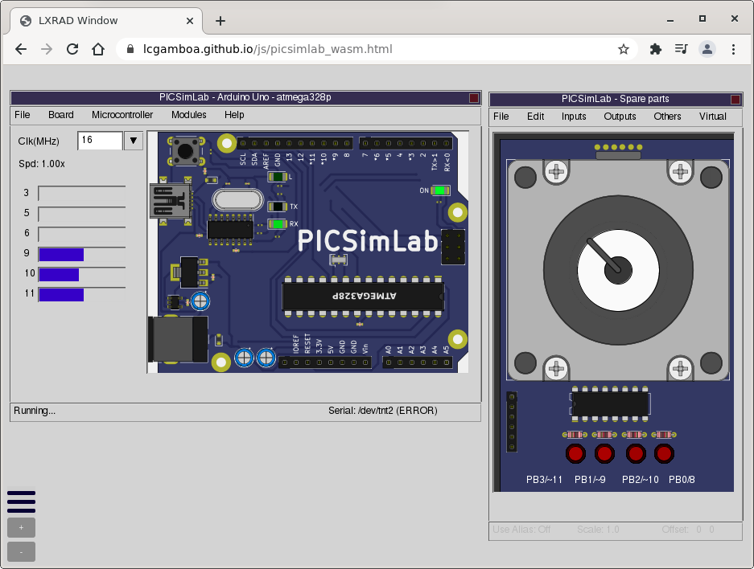
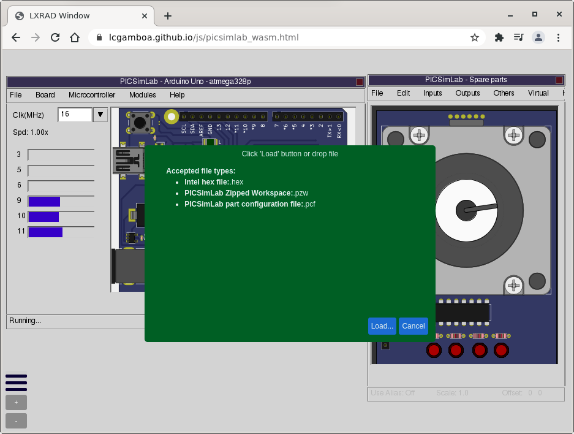

Appendix A
Online Simulator
The online version of PICSimLab has the same source code as the desktop version compiled using Emscripten. The online version does not have the Tools menu, support for debugging and serial communication (only for IO Vterm).

There are three versions generated with Emscripten:
- WASM with multithread - Fast speed (50% of desktop version ) and worse browser compatibility (currently only tested and work in Chrome and Firefox desktop)
- WASM - Good speed and good browser compatibility
- ASM.JS - Slow speed and better browser compatibility
Clicking on the three-bar menu (botton left) or any loading option in the menus to open the file loading window. Files can be loaded by drag and drop or by the load button.

The simulator can also be accessed from the examples page for online viewing of most examples (View Online link).
Due to the limitations of the online version, it is advisable to use the desktop version which has more resources and higher simulation speed, especially above 8Mhz clocks.